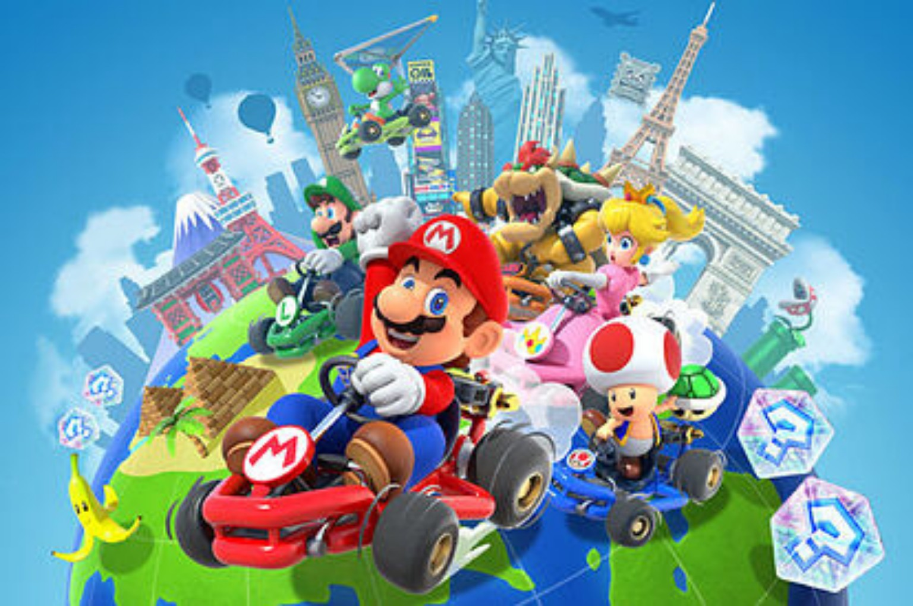
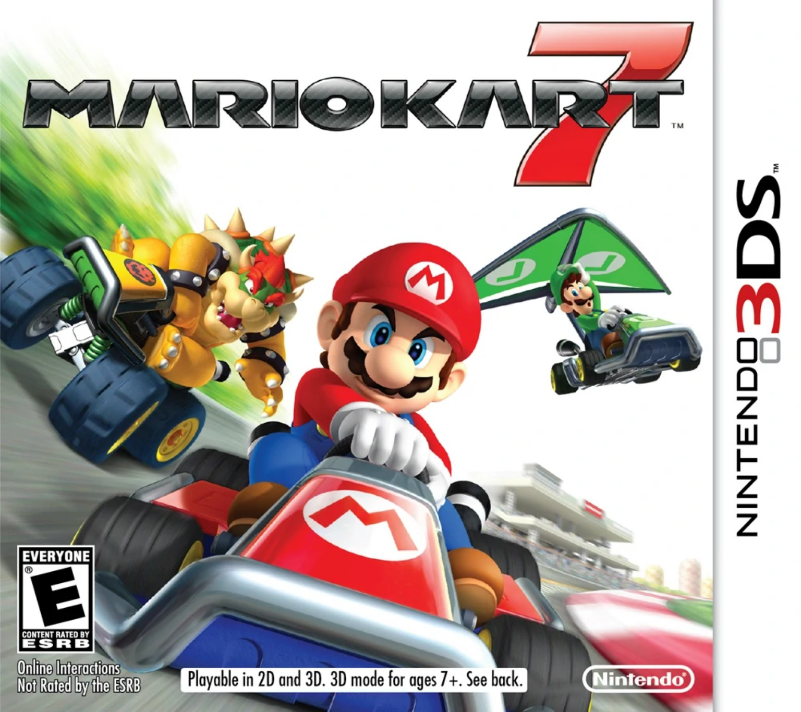

MARIO KART × FÍSICA BÁSICAARRANCA
BIENVENIDO A KART LAB
ARRANCA
LA FÍSICA.
Descubre qué pasa cuando dos karts chocan.
▶ Entrar al simuladorElegir pilotos y pista →Cuatro pilotos · Dos circuitos · Tres tipos de choque
CLIP 1 · SALIDA Y CARRERA · 30 s
Video del juego · Referencia visual01 / PREPARA LA PRUEBA
Elige tu equipo.
Selecciona dos pilotos, una pista y las condiciones del impacto.
¡Listo, a la pista! →
Las masas representan piloto + kart y son valores supuestos para la práctica.
02 / RECTA DE PRUEBAS
¡A la pista!
Elige tus pilotos y observa el impacto. El recorrido por la pista es opcional.
TU EQUIPOMario vs. Bowser
Cambiar configuración ↗CÁMARA
El recorrido previo es una presentación visual. Las masas y velocidades configuradas se aplican en la recta de impacto; los datos del informe corresponden a ese choque.
Selecciona dos pilotos y pulsa iniciar. El sentido positivo es hacia la derecha.
03 / COMPARA EL IMPACTO
Los números cuentan.
Consulta los datos de la prueba actual y descarga el archivo para tu informe.
Completa una prueba para ver los resultados finales.Volver a la prueba →
ANTES Y DESPUÉS
La física del impacto
| Magnitud | Antes | Después |
|---|
Ejecuta la prueba para obtener los resultados finales.
Energía antes
Energía después
—
04 / EL MODELO FÍSICO
Detrás de cada choque.
Las ecuaciones que conectan el juego con tu práctica de laboratorio.
EL MODELO DETRÁS DEL JUEGO
Dos karts. Un sistema.
El choque se calcula en una recta horizontal sin fricción y sin impulso externo horizontal. Los motores están apagados durante la prueba. Se utilizan las pistas originales; el choque ideal 1D se sitúa en sus rectas.
Cantidad de movimiento
p = m₁v₁ + m₂v₂
Se conserva en los tres tipos de choque. El signo de la velocidad indica el sentido.
Energía y restitución
K = ½m₁v₁² + ½m₂v₂²
e = 1 conserva K; 0 < e < 1 transforma parte de K; e = 0 deja ambos karts unidos.
Elástico
e = 1. El segundo kart inicia en reposo. Se conservan el momento y la energía cinética total.
Perfectamente inelástico
e = 0. Los karts quedan unidos con la misma velocidad. El momento se conserva y parte de la energía cinética se transforma.
Inelástico
e = 0.5 en la configuración inicial. Los karts se aproximan en sentidos opuestos. El momento se conserva y la energía cinética disminuye.